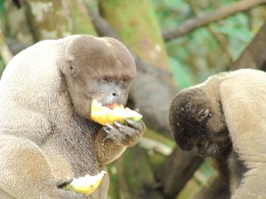

Ɲ - ɲ
ɲɑ1 ञा V क्रि. bark; भौंकना. cɑo-ɲɑ-bubɔm चाओञाबूबौम. The dog barks. कुत्ता भौंकता है।. oʈʰiɲɑbɔm ओठीञाबौम. Dog is barking at me. कुत्ता मुझ पर भौंक रहा है।. SEE: ɲɑ2 ‘eat’ ‘खाना ञाhm:{2}’; ɲɑ3 ‘yours’ ‘तुम्हारा ञाhm:{3}’.
 |
ɲɑ2 ञा V क्रि. eat; खाना. o-e-tɑ-ɲɑ kɔm ओएताञा कौम. He feeds him. वह उसको खाना खिलाता है।.  o untɑɲɑ nol be ओ ऊन्ताञा नोल बे. It is good to eat. यह खाने में अच्छा है।. SEE: ɲɑ1 ‘bark’ ‘भौंकना ञाhm:{1}’; ɲɑ3 ‘yours’ ‘तुम्हारा ञाhm:{3}’.
o untɑɲɑ nol be ओ ऊन्ताञा नोल बे. It is good to eat. यह खाने में अच्छा है।. SEE: ɲɑ1 ‘bark’ ‘भौंकना ञाhm:{1}’; ɲɑ3 ‘yours’ ‘तुम्हारा ञाhm:{3}’.
ɲɑ3 ञा PRN सर्व. yours; तुम्हारा. SD: pronominal, सर्वनाम. SEE: ɲɑ1 ‘bark’ ‘भौंकना ञाhm:{1}’; ɲɑ2 ‘eat’ ‘खाना ञाhm:{2}’.
ɲɑo ञाओ N सं. itching; boils; खुजली; फुंसी. SD: illness, रोग.
 ɲeʈeŋ ञेटेङ MORPH: ɲe-ʈeŋ. VAR: ɲyɑʈɛŋ ञ्याटैङ. ADJ वि. pitch dark; घुप अंधेरा. SD: attribute, विशेषता.
ɲeʈeŋ ञेटेङ MORPH: ɲe-ʈeŋ. VAR: ɲyɑʈɛŋ ञ्याटैङ. ADJ वि. pitch dark; घुप अंधेरा. SD: attribute, विशेषता.
ɲireːŋo ञीरेऽङो N सं. bush; झाड़ी. SD: flora, फूल-पत्ती.
ɲirlui ञीरलूई V क्रि. sneeze; छींकना.
ɲiro ञीरो N सं. cloth, to wear (upper part); पहनने का कपड़ा. SD: costume & adornment, आभूषण एवं श्रृंगार.
ɲiyɛʈɛŋ ञीयैटैङ N सं. sun; sunlight; सूर्य; धूप. SD: natural environment, प्राकृतिक वातावरण.
ɲo1 ञो VAR: ɲyo ञ्यो; ɲeo ञेओ; ɲyoː ञ्योऽ; ot-ɲyo ओत्ञ्यो. N सं. camp; डेरा. SD: hunting & gathering, शिकार एवं संचय सम्बंधी. SEE: ɲo2 ‘house’ ‘घर ञोhm:{2}’.
 |
 ɲo2 ञो VAR: ɲyo ञ्यो; ɲeo ञेओ; ɲyoː ञ्योऽ; ot-ɲyo ओत्ञ्यो. N सं. house; घर.
ɲo2 ञो VAR: ɲyo ञ्यो; ɲeo ञेओ; ɲyoː ञ्योऽ; ot-ɲyo ओत्ञ्यो. N सं. house; घर.  cyɑl ŋot ɲyo be च्याल ङोत ञ्यो बे. Where is your house? तुम्हारा घर कहां है? ɲyo-kʰuro ञ्योखूरो. big house. बड़ा घर. ŋu ɲyo-ɑk ŋut conne-bom ङू ञ्योआक ङूत चोन्नेबोम. Are you going to your home? क्या तुम अपने घर जा रहे हो? SD: habitat, रहन-सहन. SEE: ɲo1 ‘camp’ ‘डेरा ञोhm:{1}’.
cyɑl ŋot ɲyo be च्याल ङोत ञ्यो बे. Where is your house? तुम्हारा घर कहां है? ɲyo-kʰuro ञ्योखूरो. big house. बड़ा घर. ŋu ɲyo-ɑk ŋut conne-bom ङू ञ्योआक ङूत चोन्नेबोम. Are you going to your home? क्या तुम अपने घर जा रहे हो? SD: habitat, रहन-सहन. SEE: ɲo1 ‘camp’ ‘डेरा ञोhm:{1}’.
ɲobecobe ञोबेचोबे MORPH: ɲo-be-co-be. V क्रि. construct house; घर बनाना.
ɲopʰoŋ ञोफोङ N सं. entrance, of the house; घर का प्रवेश-द्वार. SD: space, अन्तरिक्ष.
ɲopʰul ञोफूल VAR: ɲɔɸur ञौफूर. N सं. bed; mat; बिस्तर; चटाई. ɲɔpʰulkɔm ञौफूलकौम. make bed. बिस्तर बनाना. SD: household, घरेलू.
ɲotɑpʰoŋ ञोताफोङ MORPH: ɲo-tɑ-pʰoŋ. VAR: ɲɔpʰoŋ ञौफोङ; ɲyɔtɑɸoŋ ञ्यौताफोङ. N सं. opening of the house; courtyard; threshold; घर का अगला हिस्सा; आंगन; देहरी. SD: household, घरेलू.
ɲotɑrɑtɑŋ1 ञोताराताङ MORPH: ɲo-tɑrɑ-tɑŋ. DEIXIS डीक्सीस. above the house; घर के ऊपर. SD: space, अन्तरिक्ष. SEE: ɲotɑrɑtɑŋ2 ‘upper side of the roof’ ‘छप्पर का ऊपरी हिस्सा ञोताराताङhm:{2}’.
ɲotɑrɑtɑŋ2 ञोताराताङ MORPH: ɲo-tɑrɑ-tɑŋ. N सं. upper side of the roof; छप्पर का ऊपरी हिस्सा. SD: household, घरेलू. SEE: ɲotɑrɑtɑŋ1 ‘above the house’ ‘घर के ऊपर ञोताराताङhm:{1}’.
ɲotɑrɑteŋ ञोतारातेङ DEIXIS डीक्सीस. lower side of the roof; छप्पर का निचला हिस्सा. SD: space, अन्तरिक्ष.
ɲotɑrɑtom ञोतारातोम MORPH: ɲo-tɑrɑ-tom. VAR: ɲo-tɑrɑ-tɔm ञोतारातौम; ɲyoːtɑrɑːtomo ञ्योऽताराऽतोमो. N सं. big, old community house; permanent dwelling place; village; विशाल, पुराना सामुदायिक भवन; स्थायी रहने की जगह; गांव. SD: habitat, रहन-सहन.
ɲotɑtecɔ ञोतातेचौ MORPH: ɲo-tɑ-tecɔ. N सं. middle beam on which a house stands; मुख्य धरन जिस पर मकान टिका होता है. SD: household, घरेलू.
ɲotɑʈɔkʰɔpʰɑreɔ ञोताटौखौफारेऔ MORPH: ɲo-tɑ-ʈɔkʰɔ-pʰɑreɔ. N सं. floor of the house; घर का फ़र्श. SD: household, घरेलू.
ɲoterolot ञोतेरोलोत N सं. openings in the screens through which smoke goes out; धुआं बाहर जाने के लिए घर की खुली जगह. SD: space, अन्तरिक्ष. NT: Now used for windows. आजकल खिड़की के लिए प्रयोग होता है।.
 |
 ɲotɛc ञोतैच MORPH: ɲo-tɛc. VAR: nyo-tɛc न्योतैच. N सं. leaf used for constructing houses; पत्ता जो घर बनाने के काम आता है. SD: flora, फूल-पत्ती. NT: Also used for making umbrellas. इन पत्तियों से छतरियां भी बनाई जाती हैं।.
ɲotɛc ञोतैच MORPH: ɲo-tɛc. VAR: nyo-tɛc न्योतैच. N सं. leaf used for constructing houses; पत्ता जो घर बनाने के काम आता है. SD: flora, फूल-पत्ती. NT: Also used for making umbrellas. इन पत्तियों से छतरियां भी बनाई जाती हैं।.
ɲotottɑrɑ ञोतोत्तारा MORPH: ɲo-tot-tɑrɑ. N सं. roof; छत. SD: household, घरेलू.
ɲoʈɔŋ ञोटौङ MORPH: ɲo-ʈɔŋ. N सं. a kind of tree; एक प्रकार का पेड़. SD: flora, फूल-पत्ती.
ɲɔc ञौच V क्रि. scratch; itch; खुरचना; खुजली करना. ʈʰɛ-ɲɔc-om ʈʰɛmom ठैञौचोम ठैमोम. I scratch myself. मैं ख़ुद को खरोंचती हूं।.
ɲɔkotrɑ ञौकोत्रा MORPH: ɲɔ-kotrɑ. VAR: ɲo-kotrɑ ञोकोत्रा. DEIXIS डीक्सीस. inside, of house; घर का अंदरूनी हिस्सा. SD: space, अन्तरिक्ष.
 |
 ɲɔrtɔ ञौरतौ N सं. way; path; road; राह; रास्ता; सड़क. ɲɔrtɔ-lobuŋ ञौरतौ-लोबूङ. long road; straight road. लम्बा रास्ता ; सीधा रास्ता. SD: habitat, रहन-सहन.
ɲɔrtɔ ञौरतौ N सं. way; path; road; राह; रास्ता; सड़क. ɲɔrtɔ-lobuŋ ञौरतौ-लोबूङ. long road; straight road. लम्बा रास्ता ; सीधा रास्ता. SD: habitat, रहन-सहन.
ɲɔsɔtbe ञौसौत्बे MORPH: ɲɔ-sɔtbe. N सं. settlement; बस्ती. SD: habitat, रहन-सहन.
ɲɔtɑcɔkʰo ञौताचौखो MORPH: ɲɔr-tɑ-cɔkʰo. N सं. path by the side of the house; घर की बगल वाली पगडंडी या सड़क. SD: habitat, रहन-सहन.
 |
 ɲure ञूरे VAR: ɲiure ञीऊरे. N सं. eel; Mangur fish, a freshwater fish; सर्पमीन; मांगूर मछली, मीठे पानी की मछली. SD: fish, मछली.
ɲure ञूरे VAR: ɲiure ञीऊरे. N सं. eel; Mangur fish, a freshwater fish; सर्पमीन; मांगूर मछली, मीठे पानी की मछली. SD: fish, मछली.
ɲyɑ ञ्या V क्रि. have it; take it; इसे लो.
ɲyo1 ञ्यो V क्रि. live; रहना. SEE: ɲyo2 ‘second singular existential object (you)’ ‘तुझे या तुम्हें या आपको ञ्योhm:{2}’.
 ɲyo2 ञ्यो PRN सर्व. second singular existential object (you); तुझे या तुम्हें या आपको. SD: pronominal, सर्वनाम. SEE: ɲyo1 ‘live in home’ ‘घर में रहना ञ्योhm:{1}’.
ɲyo2 ञ्यो PRN सर्व. second singular existential object (you); तुझे या तुम्हें या आपको. SD: pronominal, सर्वनाम. SEE: ɲyo1 ‘live in home’ ‘घर में रहना ञ्योhm:{1}’.
ɲyoekʰuro ञ्योएखूरो MORPH: ɲyo-e-kʰuro. N सं. house, very big; बहुत बड़ा घर. SD: habitat, रहन-सहन.
ɲyošoi ञ्योशोई MORPH: ɲyo-šoi. Etym: Hindi; हिन्दी. N सं. needle; घरेलू सूई. SD: household, घरेलू.
ɲyotottɑrɑ ञ्योतोत्तारा MORPH: ɲyo-tot-tɑrɑ. DEIXIS डीक्सीस. slope from the house; ढलान (घर से). SD: natural environment, प्राकृतिक वातावरण.
ɲyu ञ्यू ADJ वि. sleepy; drowsy; उनींदा. SD: state, अवस्था.